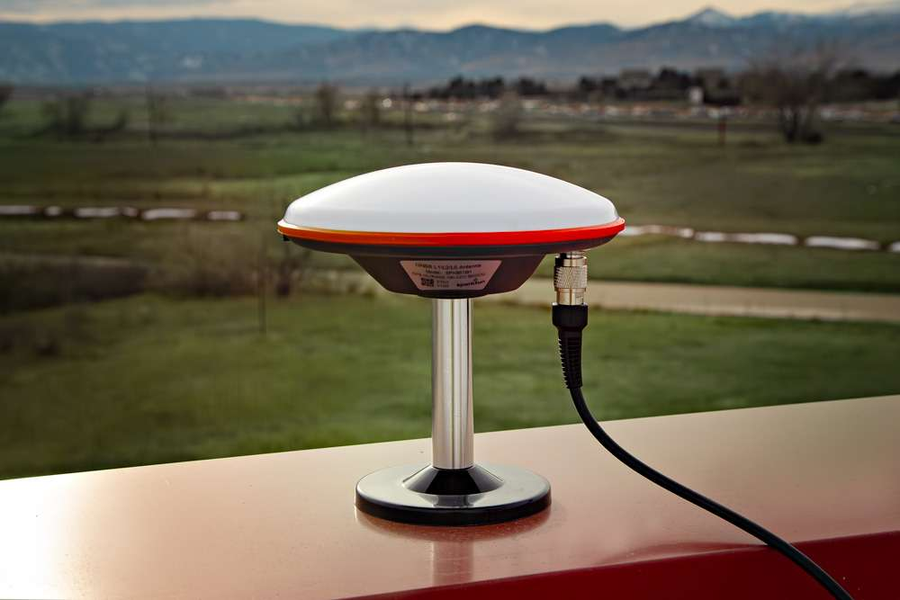

Designed and manufactured in Boulder, Colorado, USA, the SparkPNT GNSSDO is the perfect solution for your high-precision timing needs. Based around the multi-constellation, multi-frequency, L5-ready mosaic-T from Septentrio, this is our most accurate GNSS timing product to date. It features a SiTime SiT5358 disciplined 10MHz Digitally-Controlled Temperature-Controlled Crystal Oscillator (DCTCXO) providing excellent clock accuracy, stability and holdover. The mosaic-T also has built-in on-module support for the Fugro AtomiChron L-band timing service.
Under the hood, the GNSSDO is based on the mosaic-T GNSS module from Septentrio, plus the Espressif ESP32-WROVER processor (16MB flash, 8MB PSRAM). The mosaic-T has USB-C connectivity (with Ethernet-over-USB), multiple UARTs and supports full Ethernet connectivity. You can connect the mosaic-T directly to your Ethernet network - our product supports Power-over-Ethernet too. The ESP32 rides shotgun, disciplining the DCTCXO and controlling the OLED display. The GNSSDO has multiple power options including USB-C, PoE and 9V-36V DC, making it easy to connect it to a battery-backed supply. Robust SMA connections and screw cage terminals provide access to the Pulse-Per-Second and 10MHz clock signals.
CTS can be configured as a 3.3V / 5V power output via a solder jumper
EventB input - 3.3V / 5V switchable
I2C (SCL2 / SDA2) for an external TCXO / OCXO - 3.3V / 5V switchable
Ethernet:
KSZ8041NLI Ethernet PHY interface
10Base-T / 100Base-TX with auto-negotiate and Auto MDI/MDI-X
Power Options:
USB-C
Power-over-Ethernet (PoE)
9V-36V DC input (fully isolated)
RTK Base
The mosaic-T is a superb GNSS module designed for highly accurate timing applications. It can be configured as a RTK Rover and will make use of incoming RTCM corrections. However, it can NOT be configured as a RTK Base because the RTCM output is not supported.
Product Comparison
Below is a simple comparison table between our breakout board and Septentrio's development and evaluation kits:
mosaic-T Development Kit
mosaic-go Evaluation Kit
mosaic-X5 GNSS Breakout
RTK mosaic-X5
GNSSDO
RTK Rover
Yes
Yes
Yes
Yes
Yes
RTK Base
Yes
Yes
Yes
Yes
No
GNSS Antenna
Dual
Single (mosaic-X5)
Dual (mosaic-H)
Single
Single
Single
USB Connector
micro-B
micro-B
Type-C
Type-C
Type-C
Ethernet
Yes 10/100 Base-T
No
No
Yes 10/100 Base-T
Yes 10/100 Base-T
WiFi
No
No
No
Yes - Network Bridge 10 Base-T
No
COM Ports
4
2
4
1 - mosaic-X5
1 - ESP32
1 - mosaic-T
1 - ESP32
µSD Card Slot
Yes
Yes
Yes
Yes
Yes
Reset/Log Buttons
Yes
No*
Yes
Yes
Yes
Logic-Level
1.8V
3.3V
3.3V
3.3V
3.3V
5V
3.3V
5V
PPS Signal
Header Pin
6-Pin JST Connector
SMA Connector
Screw Terminal
SMA Connector
10MHz Signal
SMA Connector In Only
No
No
No
SMA Connector In/Out
Enclosure Material
N/A
Metal
N/A
Aluminum
Aluminum
Dimensions
N/A
71 x 59 x 12mm ± 1mm
70.9 x 50.8 x 8mm
180.6 x 101.8 x 41mm Enclosure Only
180.6 x 101.8 x 41mm Enclosure Only
Weight
N/A
58g ± 1g
22.6g
415.15g Enclosure Only
415.15g Enclosure Only
mosaic-go Evaluation Kit
The reset pin is exposed on 4-pin JST connector and the log pin is connected to the latch pin of the SD card slot.
Required Materials
The GNSSDO comes with everything you need to get up and running.
The linked product does not include the front/rear panels and stickers for the GNSSDO. Additionally, the product only features a red anodized plating and is not powder coated in the Septentrio orange.
Mounting Hardware
This kit does not include any mounting hardware for the antenna. If you wish to permanently mount the antenna outside, we recommend the following products:
GNSS Antenna Mounting Hardware Kit
KIT-22197
GNSS Magnetic Antenna Mount - 5/8" 11-TPI
PRT-21257
Tip
If needed, use an extension cable to reach your installation location. We have daisy chained up to three RG58 10m cables with a marginal loss in signal strength.
Extension Cables
Your GNSSDO is equally at home on your desk, lab bench, or in a server rack. But you're still going to want to put the GNSS antenna outdoors, so it will have the best view of the sky. Some extra SMA extension cables may be useful. The GNSS SMA antenna connection from the SparkPNT GNSSDO has a standard polarity.
For shorter extensions, we have RG178 cables in 1m and 25cm lengths. For longer extensions, we have higher quality, low-loss RG58 10m cables available in our catalog.
Interface Cable - SMA Female to SMA Male (10m, RG58)
CAB-21281
Interface Cable - SMA Male to SMA Female Cable (1M, RG174)
CAB-22035
Interface Cable - SMA Male to SMA Female (25cm, RG174)
CAB-22034
SMA Adapters
We have several adapters for users who need to connect to the EVENTA, PPS, and/or 10MHz signals for their server or test equipment. These SMA connections from the SparkPNT GNSSDO have a standard polarity.
The GNSSDO comes in a beautiful custom extruded aluminum enclosure, with machined end panels and matching stickers. The slotted flanges make it easy to install and secure the enclosure in many locations. But the enclosure only provides limited protection against the ingress of dust and water; it is designed to IP42. So, if you are going to permanently install it up on the roof too, you're going to need a suitable weatherproof box. We found a good one - the Orbit 57095 - also available from Amazon - back when we put together our very first DIY GNSS Reference Station.
How to Build a DIY GNSS Reference Station
AC Not Required!
The Orbit enclosure comes with a built-in power outlet, but you don't need it! The GNSSDO can be powered by Power-over-Ethernet (PoE), meaning all you really need to run up to the roof is a standard 8-core CAT-6 Ethernet cable. Choose a PoE Ethernet Switch that meets your needs. We have had good experiences with the TP-Link TL-SG1005P - available from many retailers including Amazon.
Suggested Reading
As a more sophisticated product, we will skip over the more fundamental tutorials (i.e. Ohm's Law and What is Electricity?). However, below are a few tutorials that may help users familiarize themselves with various aspects of the board.
New Video: Unlocking High-Precision RTK Positioning
Quick Start Guide
Directions
This quick start guide is intended to help users get started with the SparkPNT GNSSDO, without having to review the technical details of this product. It includes the minimum instructions to initially set up the GNSSDO, depending on the primary interface that users would like to utilize:
Instructions to connect the GNSSDO to a local network with an ethernet cable. This will provide the mosaic-T module with network connectivity for its internal web server; where, users can access its web pages with any computer or mobile device to configure the mosaic-T GNSS module.
Inside your SparkPNT GNSSDO kit, you will find the L1/L2/L5 GNSS "UFO" antenna. It has a TNC connection. Use the supplied TNC-SMA cable to connect the antenna to the GNSS SMA connection on the GNSSDO.
The antenna needs a clear view of the sky. If you are working indoors, put the antenna outside and pass the cable through a window. (Insulating double-glazed windows have a coating which can block the GNSS signal.)
Make sure the antenna is securely mounted to a structure so that it cannot be moved.
2 - Connect the GNSSDO to your Ethernet network or router
Use the supplied CAT-6 Ethernet cable to connect the ETHERNET (PoE) port to your network or an Ethernet port on your router.
If your router provides Power-over-Ethernet (PoE), you're all set (skip the next step)!
You should see the red PWR LED light up and text start to appear on the OLED display.
If your router does not provide PoE, move on to step 3.
3 - Provide power
You can power the GNSSDO using the supplied USB power supply (wall adapter) and USB cable.
Plug the power supply into the wall.
Use the supplied USB-C cable to connect the power supply to either of the USB-C ports.
You should see the red power PWR LED light up and text appear on the OLED display.
Once the mosaic-T has acquired a satellite signal and is connected to the Ethernet network, the OLED will display: the date and time; the antenna's position as Latitude (Lat) and Longitude (Long); the Ethernet IP (Internet Protocol) network address.
Connect your computer or mobile device to the same network that the GNSSDO is on, open a web browser and navigate to the IP address shown on the OLED display. You should be able to access the mosaic-T module's internal web sever. Each web page displays a lot of helpful information and can also be used to fully configure the mosaic-T GNSS module.
The following sections will help if your GNSSDO is not working as expected:
No power?
The red power PWR LED will light up when the GNSSDO has power. If the PWR LED is off, make sure the wall adapter has power and the USB cable is connected.
If you use your own Ethernet cable for Power-over-Ethernet, check it has all eight pins connected. Some cables only have four pins connected and do not support Power-over-Ethernet.
No position information?
The OLED display will only show position information (Lat, Long etc.) once a satellite signal has been acquired. If you don't see these on the display, check the SMA to TNC cable is connected correctly and that the antenna is outside with a clear view of the sky. Use a male-female SMA extension cable if needed to increase the cable length.
No IP address?
Check the Ethernet interface is enabled. It may be disabled. Connect via the CONFIG MOSAIC USB-C port and open 192.168.3.1 on a web browser. Check the Communication Ethernet sub-page.
By default, the mosaic-T Ethernet port is configured for Dynamic Host Configuration Protocol (DHCP). It expects the router / Ethernet switch to provide it with an IP address. If the IP address is all zeros (0.0.0.0), check that your router has DHCP enabled. Most do.
If you need a static IP address, you can configure this through the mosaic-T's Communication Ethernet sub-page.
Subnet 3 is reserved for the mosaic-T's USB-C connection (Ethernet-over-USB). If your router / switch is allocating addresses using subnet 3 (192.168.3.***), please change its settings so it uses a different subnet.
No web page?
If you can not see the mosaic-T's internal web page, please check that your computer / tablet / phone is connected to the same network. Most broadband routers support both Ethernet and WiFi simultaneously using the same subnet. If you are using a phone, check it is connected to the router WiFi - and not using its mobile data connection.
Subnet 3 is reserved for the mosaic-T's USB-C connection (Ethernet-over-USB). If your router / switch is allocating addresses using subnet 3 (192.168.3.***), please change its settings so it uses a different subnet. If it is using subnet 3, both the mosaic-T and your device will appear to have valid IP addresses but will not be able to communicate.
The mosaic-T has a built-in high-speed USB port which supports Ethernet-over-USB and two additional UART COM ports. To take advantage of this interface, you first need to install Septentrio's USB driver.
Inside your SparkPNT GNSSDO kit, you will find the L1/L2/L5 GNSS "UFO" antenna. It has a TNC connection. Use the supplied TNC-SMA cable to connect the antenna to the GNSS SMA connection on the GNSSDO.
The antenna needs a clear view of the sky. If you are working indoors, put the antenna outside and pass the cable through a window. (Insulating double-glazed windows have a coating which can block the GNSS signal.)
Make sure the antenna is securely mounted to a structure so that it cannot be moved.
2 - Download and install Septentrio RxTools
The Septentrio mosaic-T Resources page has download links for the mosaic-T datasheet, firmware, firmware guide, hardware manual, how-to videos and the RxTools support tool suite.
RxTools includes the USB driver for the mosaic-T module plus several tools, which you can use to control and configure the mosaic-T, forward data, log data, analyze the log files, convert the log files to other formats, and configure the module for use with other GIS software.
Use the supplied USB-C cable to connect the CONFIG MOSAIC port to your computer.
4 - Open the web page
Open a web browser on your computer and navigate to 192.168.3.1 to view the mosaic-T's internal web page.
You can now use the RxTools suite to take full advantage of the sophisticated mosaic-T.
Not working?
The following sections will help if your GNSSDO is not working as expected:
No power?
The red power PWR LED will light up when the GNSSDO has power. If the PWR LED is off, make sure the USB cable is connected.
No position information?
The OLED display will only show position information (Lat, Long, Alt etc.) once a satellite signal has been acquired. If you see only an IP address on the display, check the SMA to TNC cable is connected correctly and that the antenna is outside with a clear view of the sky. Use a male-female SMA extension cable if needed to increase the cable length.
No web page?
If you can not see the mosaic-T's internal web page at 192.168.3.1, please check that your computer / tablet / phone is connected correctly to the USB-C port.
Subnet 3 is reserved for the mosaic-T's USB-C connection (Ethernet-over-USB). If your computer is simultaneously connected to an Ethernet or WiFi network that also uses subnet 3 (192.168.3.***), please change the network settings so it uses a different subnet.
The SparkPNT GNSSDO contains an ESP32-WROVER microcontroller module, which is able to discipline the frequency of the internal SiT5358 temperature-controlled crystal oscillator (TCXO). By linking the CONFIG ESP32 USB-C port to your computer, you can view and modify the settings of the ESP32 firmware using a terminal emulator.
Inside your SparkPNT GNSSDO kit, you will find the L1/L2/L5 GNSS "UFO" antenna. It has a TNC connection. Use the supplied TNC-SMA cable to connect the antenna to the GNSS SMA connection on the GNSSDO.
The antenna needs a clear view of the sky. If you are working indoors, put the antenna outside and pass the cable through a window. (Insulating double-glazed windows have a coating which can block the GNSS signal.)
Make sure the antenna is securely mounted to a structure so that it cannot be moved.
2 - Download and install a terminal emulator like Tera Term
To communicate with the firmware running on the ESP32, you will need a serial console or terminal emulator.
If you are using Windows, we still recommend Tera Term
3 - Connect the GNSSDO to your computer
Use the supplied USB-C cable to connect the CONFIG ESP32 port to your computer.
You may need to install a USB driver first, so that the CH340 serial interface chip is recognized.
4 - Open the terminal emulator
Open the terminal emulator and connect to the CH340 COM port. Select 115200bps as the baud rate.
Once connected, you will see a debug message from the ESP32 every second. The message contains the date, time, Lat, Long and other information about the clock accuracy.
Pressing any key will open the configuration menu, allowing you to change the firmware settings if needed.
The firmware settings are stored in flash (non-volatile) memory when you exit the menus. After changing them, exit the menus completely, then you can disconnect the computer and power the GNSS using the supplied wall charger.
Note
You should never need to change most of the firmware settings, the default settings will meet the needs of almost all users.
Tip
Enabling the TCP Server (IPS1) option via the Configure Operation menu will allow you to access the firmware serial console via TCP. The firmware settings can then be accessed over the Ethernet or Ethernet-over-USB interfaces, instead of CONFIG ESP32 USB-C. The TCP port number can be changed via the menu; the default TCP port is 28785.
Not working?
The following sections will help if your GNSSDO is not working as expected:
No power?
The red power PWR LED will light up when the GNSSDO has power. If the PWR LED is off, make sure the USB cable is connected.
No position information?
The OLED display will only show position information (Lat, Long, Alt etc.) once a satellite signal has been acquired. If you see only an IP address on the display, check the SMA to TNC cable is connected correctly and that the antenna is outside with a clear view of the sky. Use a male-female SMA extension cable if needed to increase the cable length.
No serial console?
If you can not see the debug messages and configuration menu in the terminal emulator, check that: you have installed the CH340 driver if needed; you are connected to the CH340 COM port; you have selected 115200bps as the baud rate.
Hardware Overview
Read Before Handling PCB!
ESD Sensitivity
The mosaic-T module is sensitive to ESD. Use a proper grounding system to make sure that the working surface and the components are at the same electric potential.
ESD Precaution
As recommended by the manufacturer, we highly encourage users to take the necessary precautions to avoid damaging their module.
The GNSSDO features ESD protection on the USB-C connectors, ethernet jack, I/O terminals and antenna connections.
iFixit Anti-Static Wrist Strap
TOL-25572
ESP32 Firmware
We have intentionally kept the ESP32 firmware as simple as possible - it only disciplines the TCXO oscillator and controls the OLED display. The SparkFun RTK Firmware or SparkFun RTK Everywhere firmware will not run on this product. The intention is that you can easily develop your own firmware for the GNSSDO if the SparkFun firmware does not meet your needs.
For the board dimensions, users can download the KiCad files for this board. These files can be opened in KiCad and measurements can be made with the measuring tool.
KiCad - Free Download!
KiCad is free, open-source CAD program for electronics. Click on the button below to download their software. (*Users can find out more information about KiCad from their website.)
The mosaic-T and the ESP32 both required 3.3V power. To simplify the power circuitry, the four power sources are combined into a common 5V rail which then feeds individual 3.3V regulators for the mosaic-T and the ESP32.
Power connections on the GNSSDO PCB.
The GNSSDO can be powered individually or in combination, with any of the following:
USB Ports - 5V; delivered via the MOSAIC CONFIG and/or ESP32 CONFIG USB-C connectors.
Power-over-Ethernet - Range: 36 to 57V; delivered via the MOSAIC ETHERNET RJ45 MagJack connector.
External DC Power - Range: 9 to 36V; delivered via the VIN+ and VIN- screw cage terminals.
Measure Current Draw
If you want to measure the board's current draw, you can open the MEAS jumper and measure the current via a pair of breakout pads (see the Jumpers section).
Protection Components
Diodes are used to combine and protect the power sources from each other. Also, a 2A resettable fuse (green) provides additional protection.
Info
For more details, users can reference the schematic and the datasheets of the individual components on the board.
The mosaic-T and ESP32 both have USB-C connections. These USB ports can be used to power the GNSSDO during the initial configuration when the mosaic-T or ESP32 are connected to a computer.
USB-C connectors on the GNSSDO.
The USB-C device connections on the GNSSDO PCB.
CH340 Driver
The CH340 allows the ESP32-WROVER to communicate with a computer/host device through the USB-C connection. This allows the ESP32 to show up as a device on the serial (or COM) port of the computer. Users will need to install the latest drivers for the computer to recognize the CH340 (see USB Driver section).
The mosaic-T Ethernet port supports Power-over-Ethernet (PoE), allowing the GNSSDO to be powered by the network. This is very useful when the GNSSDO is mounted remotely - perhaps in a weatherproof box up on the roof. Data and power can be delivered through a single cable, avoiding the need for a separate power connection.
The Power-over-Ethernet (PoE) jack on the GNSSDO.
The PoE power input circuit on the GNSSDO PCB.
The GNSSDO includes a fully-isolated DC-DC converter, for applications where you may want to power the unit from a vehicle. The DC-DC converter accepts DC voltages between 9V and 36V, regulating this down to 5V. The converter is fully isolated to 1.5kV and operates with ~90% efficiency.
The VIN+ and VIN- screw terminal pins for the external DC power input.
The DC-DC power converter and external power inputs on the GNSSDO PCB.
Vehicle Power
For 12V or 24V vehicle power:
Connect 12V or 24V to the VIN+ screw cage terminal
Connect 0V (chassis) to the VIN- screw cage terminal
Power Source
Additionally, make sure that the power source from the vehicle is not directly tied to the vehicle's battery, Always On, or accessory circuits. Otherwise, users will risk draining the battery while the engine is off.
We recommend locating the ignition on or switched power circuit, which is only powered when the key is in the On position and the engine is running.
Note
The On position, is where a key normally rests after the engine is started. However, users can still move the key from the Off position and into the On position without starting the engine. In this case, the alternator is not running and keeping the battery charged.
Modern eco-efficient vehicles may automatically shut down the engine if the vehicle is idling too long. Therefore, cutting off the vehicle's alternator that keeps the battery charged. Luckily, most vehicles with this automatic start/stop technology will monitor the battery's voltage and restart the engine when required. With this in mind, users may want to initially monitor their battery voltage, in case their vehicle isn't "so smart".
Ground Loop
If desired, users can link VIN- to the adjacent GND screw cage terminal. However, this will bypass the voltage isolation and could introduce an unwanted ground loop, particularly if the GNSS antenna ground (shield, 0V) is also connected to the chassis.
mosaic-T
The heart of our product is of course the mosaic-T GNSS module from Septentrio. It is a very sophisticated chip with multiple interfaces: UARTS, USB and Ethernet. The GPIO1 and GPIO2 pins are available as 0.1" test points should you need access to them.
The Septentrio mosaic-T GNSS module.
ESP32-WROVER
The ESP32 processor is there to control (discipline) the 10 MHz TCXO oscillator and the OLED display. We have deliberately kept the ESP32 firmware as simple as possible. The intention is that you can write your own firmware using the Espressif IDF or Arduino IDE if you need to.
The Espressif ESP32-WROVER processor.
Think of the ESP32 as a co-processor, or riding shotgun... The mosaic-T COM1, COM3 and COM4 UARTs are linked to the ESP32, allowing the two to communicate directly without needing an Ethernet link. In our firmware, the PVTGeodetic and ReceiverTime messages are output on COM1. The ESP32 displays some of their content on the I2C OLED display, and then uses the content to discipline the TCXO oscillator. See Oscillator for more details.
ESP32 Firmware
We have intentionally kept the ESP32 firmware as simple as possible. The intention is that users can easily develop their, own firmware for the GNSSDO using the Espressif ESP IDF or the Arduino IDE if the SparkFun firmware does not meet their needs.
The ESP32-WROVER-IE antenna is not connected. If you write your own firmware and want to use BT/WiFi connectivity, you will need to attach your own antenna to the u.FL connector on the ESP32 module.
Ethernet PHY Interface
The mosaic-T has a KSZ8041NLI Ethernet PHY interface, connected using a Reduced Media-Independent Interface (RMII).
Ethernet (PoE) conection.
The Ethernet PHY on the GNSSDO PCB.
No IP address?
Check the Ethernet interface is enabled. It may be disabled. Connect via the CONFIG MOSAIC USB-C port and open 192.168.3.1 on a web browser. Check the Communication Ethernet sub-page.
By default, the mosaic-T Ethernet port is configured for Dynamic Host Configuration Protocol (DHCP). It expects the router / Ethernet switch to provide it with an IP address. If the IP address is all zeros (0.0.0.0), check that your router has DHCP enabled. Most do.
If you need a static IP address, you can configure this through the mosaic-T's Communication Ethernet sub-page.
Subnet 3 is reserved for the mosaic-T's USB-C connection (Ethernet-over-USB). If your router / switch is allocating addresses using subnet 3 (192.168.3.***), please change its settings so it uses a different subnet.
USB-C Connectors
The mosaic-T and ESP32 both have USB-C connections. The MOSAIC USB port is high-speed and connected to the T through a balancing transformer. The ESP32 USB port is connected through a CH340 USB-UART IC.
USB-C connections: mosaic-T (left) and ESP32 (right).
The USB-C data connections on the GNSSDO PCB.
Info
The GNSSDO can draw power from either or both USB ports, in addition to Power-over-Ethernet and the DC-DC external input described above.
CH340 Driver
The CH340 allows the ESP32-WROVER to communicate with a computer/host device through the USB-C connection. This allows the ESP32 to show up as a device on the serial (or COM) port of the computer. Users will need to install the latest drivers for the computer to recognize the CH340 (see USB Driver section).
µSD Socket
The µSD socket is connected directly to the mosaic-T via a one-bit SDIO interface for fast data logging. The mosaic-T supports µSD cards with a FAT32 file system (i.e. only cards up to 32GB in size).
µSD slot and LOG button.
µSD socket and Log button on the GNSSDO PCB.
Operation Instructions
Initial Configuration
Before logging can take place, it is necessary to define a "logging stream" using the Logging page or RxTools. Streams can contain NMEA or SBF (Septentrio Binary Format) data; SBF can contain RTCM and/or RINEX.
Once the stream is defined, users can control the data logging operation through the LOG button.
A short press of the LOG button (< 5s) toggles data logging to the SD card on and off.
The red LOG LED will flash while logging is taking place.
A long press, holding the LOG button for more than 5 seconds (> 5s) and then releasing it, will force the board to:
Unmount the SD card if it was mounted
Mount the SD card if it was unmounted
SMA Connectors
The GNSSDO has robust SMA connectors for the mosaic-T GNSS antenna, Pulse-Per-Second output, 10 MHz input / output, and the Event A input.
The SMA connections on the SparkPNT GNSSDO.
Connector Polarity
All these SMA connectors have a standard polarity. When selecting antennas and/or cables for the GNSSDO, double-check the polarity for the connections and cables.
The SMA connector for the EventA input.
The Event A SMA connector is standard polarity. The voltage is adjustable via the VCCIO switch: 3.3V or 5V. 2.8V and 1.8V are also available via the jumper links (see the Jumpers section). The output can also be configured for 50 Ohm via the jumper links (see the Jumpers section).
The SMA connector for the Pulse-Per-Second output.
The Pulse-Per-Second SMA connector is standard polarity. The voltage is selectable via the VCCIO switch: 3.3V or 5V. 2.8V and 1.8V are also available via the jumper links (see the Jumpers section). The output is DC-coupled. The output can be configured for 50 Ohm output via the jumper links (see the Jumpers section).
The connection for the Pulse-Per-Second output.
The SMA connector for the GNSS antenna.
The mosaic-T GNSS SMA connector is standard polarity and provides 3.3V power for an active antenna.
The connection for the GNSS antenna to the mosaic-T.
These terminals are described in the tabs below. For more information on the I/O terminals, you can refer to the schematic.
The VIN+ and VIN- terminals allow the GNSSDO to be powered by an external DC power source - typically a 12V / 24V vehicle battery.
Terminal
Function
VIN+
External voltage: Min: 9V; Max: 36V
VIN-
Ground / Chassis / 0V
Info
The DC-DC converter in the GNSSDO provides 1.5kV isolation between VIN+/VIN- and 5V/GND. There is no direct electrical connection between VIN- and GND.
Ground Loop
If desired, users can link VIN- to the adjacent GND screw cage terminal. However, this will bypass the voltage isolation and could introduce an unwanted ground loop, particularly if the GNSS antenna ground (shield, 0V) is also connected to the chassis.
Ground / 0V or logic-low reference.
Info
The DC-DC converter in the GNSSDO provides 1.5kV isolation between VIN+/VIN- and 5V/GND. There is no direct electrical connection between GND and VIN-.
Ground Loop
If desired, users can link GND to the adjacent VIN- screw cage terminal. However, this will bypass the voltage isolation and could introduce an unwanted ground loop, particularly if the GNSS antenna ground (shield, 0V) is also connected to the chassis.
The mosaic-T UART COM2 connections are connected as follows:
Terminal
Function
Notes
RX
COM2 UART Receive - Input
TX
COM2 UART Transmit - Output
RTS
COM2 UART Request To Send - Output
The module drives this pin low when ready to receive data
CTS
COM2 UART Clear To Send - Input
Must be driven low when ready to receive data from the module
Tip
The COM2 I/O voltage is set by the VCCIO voltage selection switch.
Tip
The RX and CTS inputs have weak (100K) pull-ups to VCCIO.
Tip
The CTS terminal can be configured as a VCCIO power output by soldering the jumper closed on the PCB.
The CTS terminal can be configured as a VCCIO power output by soldering the jumper closed on the PCB.
VCCIO jumper.
Tip
Soldering the jumper closed will place the mosaic-T COM2 CTS into the high (not ready) state. Flow control (hardware handshaking) is not possible when the jumper is closed. Flow control is disabled by default. If needed, flow control can be (re)disabled through the web interface or by sending (e.g) scs, COM2, baud115200, bits8, No, bit1, none
The VCCIO voltage can be set to 3.3V or 5V via the small internal slide switch highlighted below:
VCCIO voltage selection switch.
The CTS terminal can then be used as a power output or logic-high references. Likewise, the GND terminal can be used for power return or as logic-low references.
Terminal
Function
CTS
3.3V or 5V power output or logic-high reference
GND
Ground / 0V or logic-low reference
Info
The default position of the VCCIO switch is 3.3V.
Tip
The CTS and GND pins could be used to power (e.g.) a LoRa module. When VCCIO is 3.3V, we recommend limiting the current draw from VCCIO to 200mA maximum. The upstream 3.3V regulator is rated at 600mA but it also provides power for the mosaic-T and Ethernet PHY. When VCCIO is set to 5V, the current draw can be higher - the suggested maximum is 500mA.
The mosaic-T EVENTB input can be used to mark or timestamp external events:
Terminal
Function
EVENTB
Event B : Input
Tip
The EVENT B voltage level is set by the VCCIO voltage selection switch.
Tip
The EVENT B input is pulled low internally. Pull up to VCCIO to trigger an event.
Tip
An easy way to observe the events is with RxToolsRxControlExpert Console (under Tools) ExEvent tab:
Capturing external events from EVENTA and EVENTB.
The SCL2 and SDA2 screw terminals provide access to the TCXO I2C bus, allowing the user to connect an external configurable TCXO if desired. The I2C voltage level is set by the VCCIO switch: 3.3V or 5V. The provided firmware supports the SiTime SiT5358; the user will need to modify the firmware to support additional osciillators.
Terminal
Function
SCL2
I2C Clock : Bidirectional
SDA2
I2C Data : Bidirectional
Tip
The I2C voltage is set by the VCCIO voltage selection switch.
Switches
There are two miniature slide switches on the GNSSDO PCB:
Switches
This switch sets the voltage of the Input Output Terminals (COM2 UART, Event B, SCL2 & SDA2)
The I/O voltage can be set to 3.3V (default) or 5V.
This switch changes the function of the 10MHz SMA connector
When set to OUT (default):
The SMA connector will output a 10MHz "CMOS" disciplined clock signal
The signal voltage is set by the VCCIO voltage selection switch
When set to IN:
The user can apply a clock signal from an external 10MHz oscillator
The TCXO is locked to the correct frequency - as reported by PVTGeodetic RxClkBias
Connected to ESP32 GPIO pin 33
PVT - Position Velocity Time (Green)
Solid Green - The mosaic-T has valid Position, Velocity and Time
Off - Satellite signal not present or acquired
ERROR - GNSS Error (Yellow)
The GNSS Error status - as reported by PVTGeodetic Error
Connected to ESP32 GPIO pin 32
RTK - Real-Time Kinematic (Yellow)
This LED has little or no functionality on the GNSSDO as the mosaic-T uses PPP, not RTK
Internally, it is connected to the mosaic-T GPLED2 pin
It can be configured for (e.g.) TRACKLED if desired
The status indicator LEDs on the GNSSDO.
The status indicator LEDs on the GNSSDO PCB.
OLED Display
The GNSSDO has a 128x64 pixel OLED display, controlled by the ESP32 via I2C. After some initial diagnostic messages, the display will show position, time and other data from the mosaic-T PVTGeodetic, ReceiverTime and IPStatus SBF blocks.
PPS : Indicates if the Pulse-Per-Second signal is being generated
Off, On
PPS is only generated once the RxClkBias has achieved the required accuracy
Bias : RxClkBias from PVTGeodetic (ms/us/ns)
The display is updated on arrival of the ReceiverTime message. You may see a small lag between the display and the actual time system time, but it will be minimal.
Buttons
There are three buttons on the GNSSDO: RESET, BOOT, and LOG.
The RESET button allows users to reset the firmware running on the ESP32-WROVER module without disconnecting the power.
The BOOT button can be used to force the ESP32 into the serial bootloader. Holding down the BOOT button, while connecting the GNSSDO to a computer through its USB-C connector or resetting the board will cause it to enter the Firmware Download mode. The ESP32 will remain in this mode until it power cycles (happens automatically after uploading new firmware) or the RESET button is pressed.
Hold the BOOT button down.
Reset the MCU.
While unpowered, connect the board to a computer through the USB-C connection.
There are several jumpers on the GNSSDO PCB which can be used to (e.g.) disable the LEDs or allow measurement of the board's current draw.
The jumpers on the top of the GNSSDO PCB.
The jumpers on the bottom of the GNSSDO PCB.
POE - This jumper can be used to disconnect the Power-over-Ethernet (PoE) module 50Ω load.
The PoE module has a minimum load of 200mA. We included the 50Ω load to ensure this is met. If you can ensure this by other means, open this jumper to disconnect the load.
Voltage Configuration: A-V
The jumper links A-V can be used to configure the voltage levels and impedance of the SMA connections. Please refer to the schematic for additional information.
To configure the 10MHz output for 50 Ohms: open jumper A and close jumper D.
Jumper A is closed by default. Open it to select 50 Ohms for the 10MHz output.
Jumper B is closed by default. It could be used to isolate the gate driving the 10MHz output. Advanced use only.
Jumper C is open by default. It could be used to select the alternate gate for the 10MHz CMOS output. Advanced use only.
Jumper D is open by default. Close it to select 50 Ohms for the 10MHz output.
To configure the PPS output for 50 Ohms: open jumper E and close jumper H.
Jumper E is closed by default. Open it to select 50 Ohms for the PPS output.
Jumper F is closed by default. It could be used to isolate the gate driving the PPS output. Advanced use only.
Jumper G is open by default. It could be used to select the alternate gate for the PPS CMOS output. Advanced use only.
Jumper H is open by default. Close it to select 50 Ohms for the PPS output.
Jumpers J,K,L configure the voltage of the Event A input.
Jumper J is closed by default. It selects VCCIO as the Event A input voltage.
Jumper K is open by default. Open jumper J and close jumper K to configure Event A for 2.8V.
Jumper L is open by default. Open jumper J and close jumper L to configure Event A for 1.8V.
Jumpers M,N,P configure the voltage of the PPS output.
Jumper M is closed by default. It selects VCCIO as the PPS output voltage.
Jumper N is open by default. Open jumper M and close jumper N to configure PPS for 2.8V.
Jumper P is open by default. Open jumper M and close jumper P to configure PPS for 1.8V.
Jumpers R,S,T configure the voltage of the 10MHz output.
Jumper R is closed by default. It selects VCCIO as the 10MHz output voltage.
Jumper S is open by default. Open jumper R and close jumper S to configure 10MHz for 2.8V output.
Jumper T is open by default. Open jumper R and close jumper T to configure 10MHz for 1.8V output.
Jumper U can be used to isolate the on-board 10MHz TCXO.
Open jumper U when connecting an alternate TCXO via the breakout pads on the PCB. Advanced use only.
To configure the Event A input for 50 Ohms: close jumper V.
Jumper V is open by default. Close it to select 50 Ohms for the Event A input.
LED Jumpers
LINK - open this jumper to disable the Ethernet Link LED.
SPEED - open this jumper to disable the Ethernet Speed LED.
RTK - open this jumper to disable the mosaic-T Real-Time Kinetic LED.
PVT - open this jumper to disable the mosaic-T Position Velocity Time LED.
LOG - open this jumper to disable the mosaic-T Log LED.
ERROR - open this jumper to disable the GNSS error LED.
LOCK - open this jumper to disable the TCXO lock LED.
PWR - open this jumper to disable the Power LED.
Button Jumpers
BOOT - open this jumper to disconnect the ESP32 BOOT pushbutton.
RESET - open this jumper to disconnect the ESP32 RESET pushbutton.
SHLD (x2) - open these jumpers to isolate the USB-C connector shield from GND.
I2C (x2) - open these dual jumpers to disconnect the pull-ups for the I2C buses.
Note: there are separate jumpers for the two I2C buses: OLED (Qwiic); and the SiTime TCXO.
VIN+ and VIN-
Open these jumpers if you wish to isolate (disconnect) the external DC power terminals. The breakout pads can then be used to feed in power from an alternate source.
POE+ and POE-
Open these jumpers if you wish to isolate (disconnect) the Power-over-Ethernet pins on the MOSAIC Ethernet magjack. The breakout pads can then be used to feed in power from an alternate source.
VCCIO
The VCCIO jumper can be soldered closed to connect the CTS screw terminal to VCCIO. CTS can then be used as a power output. The voltage is set by the VCCIO slide switch.
MEAS
Open the MEAS jumper if you wish to measure the total current drawn by the GNSSDO, or (e.g.) wish to add an ON/OFF switch. The breakout pads can then be used to attach a multimeter or a mechanical power switch.
MEAS is upstream of the two 3.3V regulators and downstream of the four power source combination and protection diodes.
Hardware Assembly
Warning
When assembling the GNSSDO, users should attach any power connections last. While there shouldn't be any issues with hot-swapping peripherals, it is common practice to power electronics as the last step of the assembly process (and the power should be disconnected before removing components).
What is in the Box?
The SparkPNT GNSSDO comes packaged as a complete kit, with all the accessories you'd need to set it up.
Everything that is included in the SparkPNT GNSSDO kit.
The USB ports are utilized to configure the mosaic-T module and ESP32 firmware settings. Additionally, the USB ports can also be used as a power source for the GNSSDO.
The GNSSDO with USB-C cable being attached.
The USB port to the mosaic-T can be used to configure the module through an IP port, for serial communication to stream the GNSS data, and access the SD card as a mass storage device. To connect to the mosaic-T, users only need to plug a USB-C cable into the CONFIG MOSAIC USB port and their computer.
The GNSSDO with USB-C cable being attached.
With the default firmware, the USB port for the ESP32 is used for serial communication to tune the parameters for the TCXO oscillator and the Pulse-Per-Second output. To configure the settings, users only need to plug a USB-C cable into the CONFIG ESP32 USB port and their computer, and then open a terminal emulator at 115200 baud.
Software Requirements
Depending on their computer's operating system, users may need to install USB drivers to interface with the mosaic-T and/or the ESP32. Users may also need to install a terminal emulator for serial communication with the mosaic-T and the ESP32.
GNSS Antenna
In order to receive GNSS signals, users will need a compatible antenna. With the parts included in this kit, connect the L1/L2/L5 (tri-band) GNSS antenna to the GNSSDO using the TNC-to-SMA cable.
Attaching a TNC-SMA cable to the GNSS SMA connector on the GNSSDO.
Attaching a tri-band GNSS antenna to the TNC-SMA cable.
Mounting Location
Users should mount their GNSS antenna outside, where it will have a clear, unobstructed view of the sky. Avoid areas with nearby buildings, EMF structures (i.e. radio towers or power lines), and vegetation (i.e. trees). These objects can increase errors due to signal muti-path, interference, and elevated noise plane.
The tri-band GPS antenna, mounted outside with an unobstructed view of the sky.
Connector Polarity
When selecting antennas and/or cables for the GNSSDO, double-check the polarity of the connection.
Ethernet Jack
There is a single ethernet jack on the GNSSDO, which can be used to provide network access to the mosaic-T module. It supports power over ethernet (PoE) to power the device. To provide network access, users should connect the GNSSDO from the ETHERNET (PoE) jack to their local network with the (CAT-6) ethernet cable provided in the kit.
To power the device, a PoE network switch or PoE injector should be installed in between the network connection to the GNSSDO.
The GNSSDO with ethernet cable being attached to the ETHERNET (PoE) jack.
Configuration: mosaic-T Settings
Users can configure the mosaic-T module through the network connection.
No IP address?
Check the Ethernet interface is enabled. It may be disabled. Connect via the CONFIG MOSAIC USB-C port and open 192.168.3.1 on a web browser. Check the Communication Ethernet sub-page.
By default, the mosaic-T Ethernet port is configured for Dynamic Host Configuration Protocol (DHCP). It expects the router / Ethernet switch to provide it with an IP address. If the IP address is all zeros (0.0.0.0), check that your router has DHCP enabled. Most do.
If you need a static IP address, you can configure this through the mosaic-T's Communication Ethernet sub-page.
Subnet 3 is reserved for the mosaic-T's USB-C connection (Ethernet-over-USB). If your router / switch is allocating addresses using subnet 3 (192.168.3.***), please change its settings so it uses a different subnet.
10MHz Signal
For timing applications, we have broken out the TCXO 10MHz signal to an SMA connector. In our kit, users will find an SMA to BNC adapter cable that they can use to hookup this signal to their equipment. If necessary, users can add an SMA extension cable to reach their equipment.
Attaching a cable to the 10MHz SMA connector on the GNSSDO.
SD Card Slot
A µSD card slot is available for users to log and store data, locally on the board. Users will need to insert a compatible SD card and configure the mosaic-T module for data logging.
Inserting an SD card into the GNSSDO.
SD Card Compatibility
The mosaic-T supports µSD cards with a FAT32 file system (i.e. only cards up to 32GB in size).
Initial Configuration
Before logging can take place, it is necessary to define a "logging stream" using the Logging page or RxTools. Streams can contain NMEA or SBF (Septentrio Binary Format) data; SBF can contain RTCM and/or RINEX.
There are multiple ways to configure and enable data logging to an SD card. However, the simplest method is with the LOG button. Once the stream is defined,
Pressing the LOG button (< 5s) toggles data logging to the SD card on and off.
Holding the LOG button for more than 5 seconds (> 5s) and then releasing it, will force the board to:
Unmount the SD card if it was mounted
Mount the SD card if it was unmounted
For more information, please reference the SD Card Slot section.
IO Terminals
Users can easily attach accessories to the GNSSDO by wiring them into the terminal blocks on the back of the enclosure.
Connecting a wire to the terminal block.
Multiple Connections
For multiple connections or wiring harnesses, users can disconnect the terminal block from its socket on the GNSSDO.
Components of the terminal block.
Users can wiggle or use a soft/rigid object to carefully pry the terminal block off from its connector. In the picture below, a plastic name tag (~1.5mm thick) is used to carefully pry the terminal block up. We have also found the edge of a PCB ruler works great too.
Using a soft/rigid object to carefully pry the terminal block free from its socket.
Once wired up, users can simply push the terminal block back into its socket.
Connecting a wire to the terminal block.
Attaching the terminal block to its socket on the GNSSDO.
Warning
To avoid shorts or damaging the GNSSDO, verify the wiring with the labels on the back of the enclosure.
Software Overview
ESP32 Firmware
We have intentionally kept the ESP32 firmware as simple as possible - its only tasks are to: discipline the TCXO oscillator; control the OLED display. The intention is that you can easily develop your own firmware for the GNSSDO if the SparkFun firmware does not meet your needs.
You can of course modify the hardware too, should you want to. The design is completely open-source.
Note
The mosaic-T module has numerous capabilities and a multitude of ways to configure and interface with them. Without regurgitating all the information that is documented in Septentrio's user manuals and videos, we have tried to highlight a good majority of the module's aspects.
With that said, please feel free to file an issue if you feel we have missed something that may benefit other users. (Don't forget to provide us with a link to the documentation and what section the information is located.)
mosaic-T
RxTools Software Suite
Tip
Even if you aren't necessarily interested in it, we highly recommend that users install the RXTools software suite before plugging in their board. For Windows PCs, it also includes the USB driver for the module that enables the Ethernet-over-USB support and virtual COM ports.
Users should install the RXTools software suite on their computer to interact with the mosaic-T module through the USB interface. The software package includes the USB-IP driver1 necessary to recognize the board as an ethernet device on Windows PCs (1).
On Linux, the standard Linux CDC-ACM driver is suitable.
Users can install RxTools software suite by running the installation executable4(1), located in the RxTools\windows directory of the downloaded *.zip file5. During the installation process, users will be notified if a previous version of RxTools is already installed then the previous version will be uninstalled. Next, users will need to provide an installation directory for the RxTools software suite. Users will then select which of the following applications6 are installed:
For RxTools v22.1.0, the installation filename is RxTools_22_1_0_Installer.exe for Windows PCs.
RxControl
SBF Converter
SBF Analyzer
RxLogger
RxUpgrade
RxDownload
RxPlanner
Data Link
RxAssistant
RxLauncher
Warning
It is recommended that users NOT install RxControl as root, for security reasons and to avoid installation overwrites of other system settings. To make RxTools available to more than one user, provide a shared installation directory.
Users can install RxTools software suite by running the installation binary4(1), located in the RxTools/linux-i386/ directory of the downloaded *.zip file5. During the installation, users will be prompted for an installation directory. If there are any previous installations of RxControl, please use a different directory to avoid conflicts.
For RxTools v22.1.0, the installation filename is RxTools_22_1_0_Installer.bin for Linux.
Permission Settings
Once installed, users may need to reconfigure their permission settings:
RxTools will need rights to access the /dev/ttyS* serial ports.
To access the serial ports, users must be part of the uucp and lock groups (1). This can be configured by editing the /etc/group7 file and adding the username to the lines defining the uucp group and the lock group.
For example, when adding the user jsmith to the uucp group, users would modify the /etc/group file as shown below:
uucp:x:14:uucp# (2)!uucp:x:14:uucp,jsmith# (3)!
On Linux machine administered centrally on a local network, ask your system administrator to be included in the uucp and lock groups.
RxTools also needs read/write (rw) access(4) to the /dev/ttyS* serial ports.
Users can change the permissions with the chmod8 command:
chmod660/dev/ttyS<addport># (5)!>
On most Linux operating systems, the /dev/ttyS* devices are owned by root and belong to the uucp group with read/write (rw) access. Additionally, the devices are normally locked by writing a file in the /var/lock/ directory, with the same permissions.
Remove
Replace with this line
By default, users will normally have read/write (rw) access to the /dev/ttyS* serial ports.
where users must specify the port number e.g. /dev/ttyS0 might be port COM1
Note
In order for these changes to take effect, users must update their environment by logging out and back in.
Be aware that the X-session has to be restarted as well. On most systems, this can be done by pressing the key combination Ctrl + Alt + Backspace
64-bit OS
In order to run the RxTools on a 64-bit Linux operating system, users might have to install the 32-bit version of the C standard library.
For Fedora installations, this is the glibc.i686 package.
The equivalent for Debian(/Ubuntu) installations is the ia32-libs package.
Septentrio USB Driver
If users haven't already installed the RxTools software suite on their Windows PC, they will need to install the USB driver1 necessary to recognize and interact with the mosaic-T module through the USB interface.
A Windows USB driver for the mosaic-T can be installed through two methods:
RxTools Software Suite (1)
mosaic-T GNSS Receiver Module (2)
The driver is installed during the installation process.
The installation file for the Windows USB driver will be available from the mass-storage device when the board is initially connected to the computer.
Once installed, the driver emulates two virtual serial ports, which can be accessed as standard COM ports to the receiver.
Terminal Emulators
Most terminal emulation programs will not make a distinction between virtual or native COM ports. However, for virtual serial ports, the port settings (i.e. baud rate, etc.) are not relevant and the default configuration is used in the terminal emulation program. However, the physical/native COM ports will have the following default setting:
Baudrate: 115200bps
Data Bits: 8
Parity: No
Stop Bits: 1
Flow Control: None
Having Trouble?
For users who are having trouble installing the USB driver, we have an archived version (v3.0.29) of the installation file. Users can download version 3.0.2 of the driver, by clicking on the button below.
On Linux, the standard Linux CDC-ACM driver is suitable for the mosaic-T module.
Web Interface
With the USB driver installed, the mosaic-T module supports Ethernet-over-USB. The default IP address allocated for the Ethernet-over-USB interface is 192.168.3.1. This IP can be entered in any browser to open a connection to the receiver's Web Interface as shown below.
All the drop-down navigation tabs in the web interface.
Info
The default IP address cannot be changed; this feature is only to be used when a single receiver is connected to your computer.
Users will need to install a USB driver for the CH340 serial-to-USB chip, in order to communicate with the ESP32 module. The latest USB drivers for the CH340 are available from the manufacturer, on the WCH website:
The port for the TCP connection. Default is 28785.
To reset all settings to their default values, select "r", "Enter", "y", "Enter"
The settings are saved to non-volatile memory (NVM, LittleFS) on exiting the menu. Ensure you fully exit the menu ("x", "Enter", "x", "Enter") to save any modified settings.
The TCXO frequency control word is saved to NVM once per hour, to allow a quicker startup at the next power-on.
TCP Server (IPS1)
When TCP Server (IPS1) is enabled, the ESP32 serial console is diverted from the CH340 USB (CONFIG ESP32) interface to the mosaic-T COM3 UART interface and daisy chained to the IPS1 TCP server. The configuration menu and debug messages can then be accessed over TCP / Telnet on the chosen port. The CH340 USB (CONFIG ESP32) interface is then no longer active.
TCP / Telnet is supported over both Ethernet and the Ethernet-over-USB connection. Only one TCP2Way connection is supported.
If you are using Tera Term:
Select TCP/IP and Telnet
Enter the mosaic-T's IP address in Host
If you are connected via the CONFIG MOSAIC Ethernet-over-USB interface, the IP address is 192.168.3.1
Enter the TCP Server Port number in TCP port#
The default port is 28785
Tera Term configuration for TCP.
Debug Software
Select option d ("d" followed by "Enter") to configure the software debug options:
The ESP32 firmware debug menu.
The debug options are what we use at SparkFun to check that the firmware is running correctly. You should not need change any of the options, except perhaps option 8 Print conditions. This option controls the periodic CSV messages seen in the console when the menu is closed. The format can be changed to human-readable text, or the messages can be disabled if desired.
YYYY/MM/DD is the date from the ReceiverTime SBF message
HH:MM:SS is the time from the ReceiverTime SBF message
Epoch is the date and time in Unix epoch format: seconds.milliseconds from midnight UTC January 1st 1970. This is useful when plotting the data against time.
Lat is the Latitude in degrees from the PVTGeodetic SBF message (7 decimal places)
Lon is the Longitude in degrees from the PVTGeodetic SBF message (7 decimal places)
Alt is the Altitude in metres from the PVTGeodetic SBF message (0.1mm resolution)
TimeSys is the named TimeSystem from the PVTGeodetic SBF message
Error is the Error byte from the PVTGeodetic SBF message. 0 indicates no error
Fine is the FINETIME bit from the SyncLevel byte from the ReceiverTime SBF message
PPS indicates if the Pulse-Per-Second output is enabled
PPS is enabled when the RxClkBias reaches the required accuracy, set by RX Clock Bias Lock Limit
Bias is the receiver clock bias in seconds
Source is the source of the receiver clock bias reported in Bias
By default, this is PVT indicating the source is the composite RxClkBias from the PVTGeodetic SBF message
If AtomiChron is enabled and if Prefer non-composite GPS bias or Prefer non-composite Galileo bias has been selected, this will change to GPS or Galileo indicating that the individual non-composite bias from the FugroTimeOffset SBF message is available and is being used
TCXO is the 26-bit signed frequency control word written to the SiT5358 TCXO
Pk is the PI control loop Proportional term - set in the configuration menu
Ik is the PI control loop Integral term - set in the configuration menu
TCXO Oscillator
SiTime SiT5358 Disciplined Oscillator
SiT5358 TCXO Oscillator.
For the best frequency accuracy, stability and holdover, the SparkPNT GNSSDO utilizes a SiTime SiT5358 Digitally-Controlled Temperature-Controlled Crystal Oscillator (DCTCXO).
The SiT5358 is a precision MEMS Super-TCXO optimized for ±50 ppb stability from -40°C to 105°C. Engineered for best dynamic performance, it is ideal for high reliability telecom, wireless and networking, industrial, precision GNSS and audio/video applications.
SiT5358AI-FS033IT-10.000000 10MHz DCTCXO
±50ppb stability
±1ppb/°C frequency slope
±58ppb typical 20-year aging
Allan Deviation approaches 1E-14 at 10000 seconds with AtomiChron enabled
Digital frequency pulling via I²C
Operating temperature: -40 to 85 °C (Industrial)
The SiT5358 is interfaced to the mosaic-T through a level-shifting buffer, replacing the mosaic's internal oscillator and allowing the oscillator frequency to be tuned (disciplined) under software control. The 10 MHz SMA output is generated by a duplicate level-shifter to ensure an equal delay and identical thermal phase changes.
Software Control Loop
The SiT5358 is interfaced to the mosaic-T according to Appendix D of the mosaic Hardware Manual: "mosaic-Based Disciplined Clock".
The ESP32 is interfaced to three of the mosaic-T's COM (UART) ports: COM1, COM3, and COM4. The ESP32 configures the mosaic-T via COM4. COM1 is dedicated as an output port for the SBF blocks used to tune the oscillator frequency. COM3 is used to divert the ESP32 serial console to TCP.
When the firmware boots, the mosaic-T is configured as follows:
These commands configure the mosaic so that it: starts-up with the PPS pulses disabled; performs an initial precise synchronization to GNSS time; and outputs the PVTGeodetic and ReceiverTime blocks on COM1 at 1Hz. IPStatus is output each time one or more IP parameters change. With a Fugro Atomichron subscription, the FugroTimeOffset message will be generated each time one of the clock biases changes.
The firmware monitors the message blocks on COM1. The ERROR LED follows the PVTGeodetic Error code. The LED is extinguished when Error is zero.
The firmware waits until the ReceiverTime SyncLevel FINETIME bit is set, indicating that the receiver time initialization is complete. Once the FINETIME bit is set, it remains set until the next reset of the receiver.
The firmware then monitors the PVTGeodetic RxClkBias (as 64-bit float in milliseconds). When RxClkBias is positive, receiver time is ahead of system time and the oscillator frequency should be reduced. When RxClkBias is negative, receiver time is behind system time and the oscillator frequency should be increased. The firmware will adjust the SiT5358 oscillator frequency via the 26-bit Digital Frequency Control register accordingly. As per Appendix D, the frequency will be changed by no more than 3ppb per second.
The Proportional (P) and Integral (I) terms can be adjusted via the ESP32 firmware settings.
The LOCK LED will illuminate and PPS pulses will be generated when RxClkBias is less than 10ns. The OLED will show PPS On when pulses are being generated.
The 10ns lock threshold / limit can be changed by the user through the ESP32 USB-C interface and saved in non-volatile memory.
The Pulse-Per-Second parameters can also be configured by the user through the ESP32 firmware settings: interval, polarity, delay, time scale, max sync age, pulse width.
Should PVTGeodetic Error indicate an error (i.e. become non-zero), the loop will continue but no changes will be made to the oscillator frequency until the error is cleared.
Occasionally, the initial mosaic-T clock bias can be excessive - microseconds rather than nanoseconds. The firmware detects this and will restart the GNSS to achieve a better lock. You will see Bad RxClkBias --- Restarting appear on the OLED when this happens. The threshold for this can be adjusted via the ESP32 firmware settings.
Enable the L5 Band
The mosaic-T is L5-capable but, because the GPS L5 service is currently pre-operational and marked as "unhealthy", it takes some extra configuration steps to enable L5. The GNSSDO firmware enables L5 reception by default. Here are the configuration steps in case you need to configure L5 manually.
Web Interface
Admin > Expert Control > Control Panel > Navigation > Receiver Operation > Masks - Set "Discard unhealthy satellites" to off for both "Tracking" and "PVT"
Make sure to click “OK” at the bottom of each page where you are making changes to update the current configuration, and don’t forget to save it to boot if you want the configuration to persist when you cycle power.
If you need technical assistance or more information on a product that is not working as you expected, we recommend heading over to the SparkFun Technical Assistance page for some initial troubleshooting.
For data logging issues, here are some simple troubleshooting tips:
Make sure that your SD card is formatted to a FAT32 file system.
The FAT32 file system also limits the maximum capacity of the card to less than 32GB(i.e. a 256GB SD card will not work).
Make sure that the mosaic-T module has a configured data stream output.
Use the mosaic-T web page to verify that the SD card is mounted as a storage drive.
L5 Band
By default, the L5 band is disabled on the mosaic-T. To enable reception of the L5 band on the mosaic-T, we have provided instructions on the Enable the L5 Band page.
Reprogramming the ESP32
In case users accidentally reprogram or corrupt the flash memory on the ESP32, the /Firmware/Binaries folder contains the firmware binaries.
Due to the ESD sensitivity of the mosaic-T module, we don't recommend disassembling the GNSSDO. However, if users must access the PCB to troubleshoot an issue, make a modification, or repair a component, we highly recommend that they take the necessary ESD precautions to avoid damaging the mosaic-T module.
Read Before Disassembly!
ESD Sensitivity
The mosaic-T module is sensitive to ESD. Use a proper grounding system to make sure that the working surface and the components are at the same electric potential.
ESD Precaution
As recommended by the manufacturer, we highly encourage users to take the necessary precautions to avoid damaging their module.
The GNSSDO features ESD protection on the USB-C connectors, ethernet jack, I/O terminals and SMA antenna connections.
iFixit Anti-Static Wrist Strap
TOL-25572
Before disassembling the enclosure, users should disconnect the power and all cables from the GNSSDO. This will prevent users from creating any shorts and will facilitate the teardown process further on.
The GNSSDO PCB is held in place by the front and rear panels of the enclosure. While users can remove the panels first, we recommend that users disconnect the screw terminal blocks first. Users may find it more difficult to separate the terminal block from the connector later in the disassembly process.
Remove the Screw Terminal Block First
Users may find it easiest to remove the screw terminal blocks first; as opposed to later in the teardown process.
Using a soft/rigid object to carefully pry the terminal block off.
Users can wiggle or use a soft/rigid object to carefully pry the terminal block off. In the picture above, a plastic name tag (~1.5mm thick) is used to carefully pry the terminal block up. We have also found the edge of a PCB ruler works great too.
Once the terminal blocks have been removed, users can remove the front and rear panels of the enclosure. They are held in place with four, M3, Phillips head screws on the corners of each panel.
Remove Front Panel First
We recommend removing the front panel first to prevent the Qwiic cable from being yanked off the OLED display or main PCB. Once the front panel is free, carefully lift the panel and disconnect the Qwiic cable from the top connector on the OLED display.
At this point, if users have previously disconnected all the cables and the terminal blocks from the back, the GNSSDO PCB should slide out of the enclosure. Users can then, remove the rear panel from the enclosure to complete the teardown process.
On Linux, the standard Linux CDC-ACM driver is suitable. ↩↩↩
The system requirements and installation instructions are from the RxTools v22.1.0 user manual. This information may change in later iterations of the software suite. Please refer to the user manual (of the version you are utilizing) for the most accurate information. ↩↩
Higher data rates will require higher CPU speed and more memory capacity. ↩
Users will need administrative privileges to install the RxTools software. ↩↩
Users may need to extract the RxTools installation files from the downloaded, compressed file. ↩↩
Please see the release notes for the issues and limitations of the RxTools applications. ↩
Changing these permissions also requires root privileges. ↩
For the latest USB driver from Septentrio, please install their driver through the RxTools software suite. This driver version was archived at the time that the mosaic-T hookup guide was written. Please do not request for the file to be updated.↩
{kind=link}


{kind=link}
{kind=link}
{kind=link}
{kind=link}
{kind=link}
{kind=link}
{kind=link}

{kind=link}
 Measuring Tool
Measuring Tool

{kind=link}
{kind=link}
{kind=link}
{kind=link}
{kind=link}
{kind=link}
{kind=link}
 .
.{kind=link}
{kind=link}
{kind=link}
{kind=link}
{kind=link}

{kind=link}
{kind=link}
{kind=link}
{kind=link}
{kind=link}
{kind=link}
{kind=link}
{kind=link}
{kind=link}
{kind=link}
{kind=link}
{kind=link}
{kind=link}
{kind=link}
{kind=link}
{kind=link}
{kind=link}
{kind=link}
{kind=link}
{kind=link}
{kind=link}
{kind=link}
{kind=link}
{kind=link}
{kind=link}
{kind=link}
{kind=link}
{kind=link}
{kind=link}
{kind=link}
{kind=link}
{kind=link}
{kind=link}
{kind=link}
{kind=link}

{kind=link}
{kind=link}
{kind=link}
{kind=link}
{kind=link}